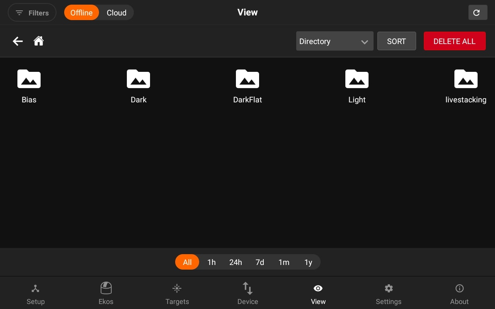
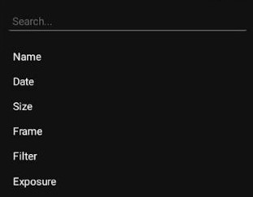

View
The View tab displays online images saved on the cloud (requires EkosLive Pro subscription, refer to Resources section) and offline images captured on StellarMate. All metadata is preserved so you can sort and search your images at any time. You can toggle between Cloud or Offline images.
Images are displayed in a grid view, Under each image there are badges for Filter, exposure duration, and binning. By default, all images are displayed in the grid without any filtering or sorting. Click on an image to view the full-size version which also provides further actions such as export and export.
You can filter the images by using the left panel. Changing the Field, allows you to select to filter using different options based on the chosen condition.
Advanced search is available from the left panel. Select the condition that must be met from the metadata fields. You may add multiple conditions to further restrict the search.

StellarMate aggregates images in Virtual Folders based on the selected Virtual Group:
- Recent Images: Shows 20 latest images captured.

- Show all Images: Show all directories & images under /home/stellarmate/Pictures.
3. Target: Group images by each unique target together regardless of where they are physically located on the device.
4. Directory (Default): This is similar to a traditional File Explorer where images are grouped by directory on StellarMate.

You can now also delete the directories. In order to delete a directory, just visit the directory and you will see the delete icon button beside the directory locatory to delete all images in a directory.
5. Frame: Group images by each unique frame type (i.e. Light, Bias..etc).
6. Date:Group images by date whereas images captured on the same day are grouped together.
- Per filter: Images are shown per filter. Those folder directories are Virtual folders.
Images can be further filtered chronologically by tapping on the bottom chrono selector. By default, images captured at all times are displayed. To filter only recent images, tap the chrono selector. For example, tapping 1H would only show images captured within the last hour.
You can view the image in full size by click on a specifc image.
Below the list of images which are in that Directory are shown. On each image click, the image and it's information will be loaded.
You can also download and delete the selected image on the right side.
To view detailed metadata, tap the top-left Info button, the information of a specific image is displayed as illustrated below.
- Sort:
It allows you to sort the images according to different options which includes, Name, date, Size, frame, Filter and Exposure.

- Delete all:
Deleting all images will delete all the images exists in the specifc directory.
i.e If you are in Per filters option and RED filter directory. It will only delete your images within RED directory virtual folder.